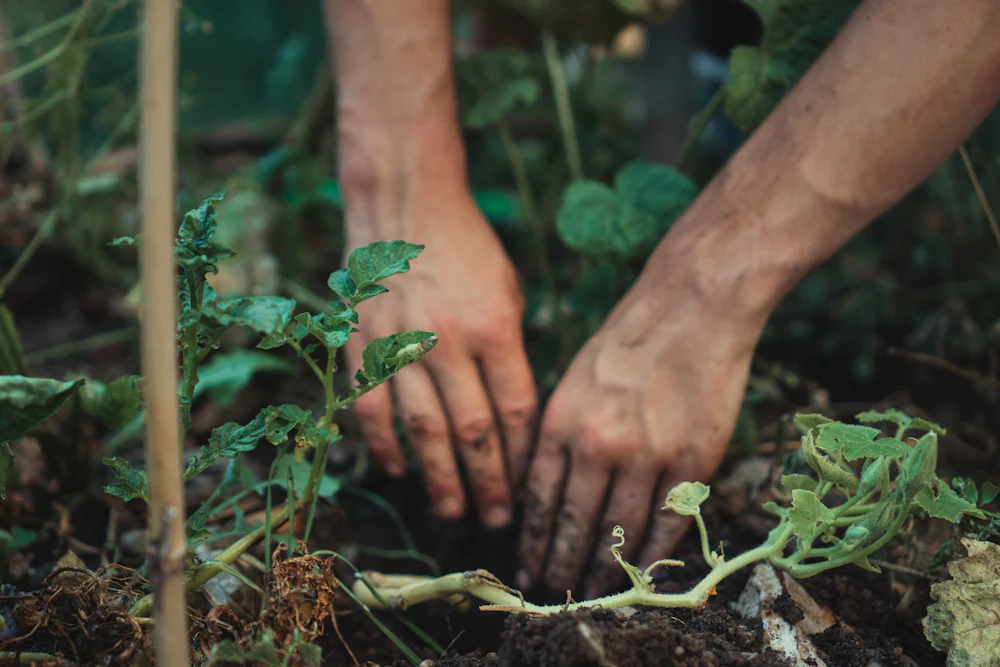
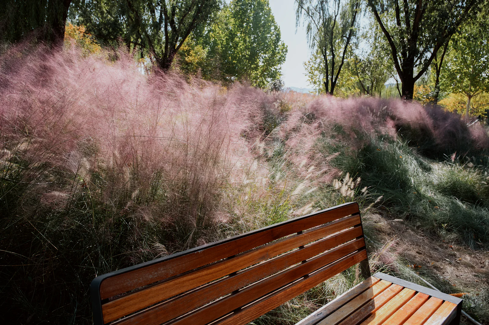

Tuinaanleg
Een nieuwe tuin, of een tuin die opnieuw begint. Mathieu komt kijken, maakt een voorstel en legt de tuin aan.
Over tuinaanleg
Mathieu Vergote legt tuinen aan en onderhoudt ze, voor particulieren en bedrijven in Gits en omgeving.
Een tuin is de plek waar u thuiskomt. Mathieu zorgt dat hij er mooi bij ligt: van een nieuwe aanleg tot het snoeien van hagen, bomen en struiken. Het groenafval neemt hij mee. U hoeft alleen nog te genieten.

Een nieuwe tuin, of een tuin die opnieuw begint. Mathieu komt kijken, maakt een voorstel en legt de tuin aan.
Over tuinaanleg
Hagen snoeien, bomen en struiken bijwerken, groenzones onderhouden. Eenmalig of op regelmatige basis.
Over tuinonderhoud
Samen met zijn zoon Juliaan kweekt Mathieu saffraan in Gits: de rode draadjes uit de bloem van de saffraankrokus.
Over de saffraan
Hagen in vorm, struiken bijgewerkt, het snoeiafval opgeruimd. Zo blijft uw tuin een plek om te zitten en te kijken.
Rustig, stap voor stap, en altijd in overleg.
U vertelt wat u voor ogen hebt. Mathieu komt kijken naar de grond, de ligging en wat er al staat.
U krijgt een duidelijk voorstel: wat er gebeurt en wat het kost.
Mathieu gaat aan de slag en houdt u op de hoogte tot alles klaar is.
Wilt u dat de tuin mooi blijft? Mathieu neemt ook het onderhoud op zich.
Bel of mail Mathieu en vertel wat u in gedachten hebt.
0477 47 90 73